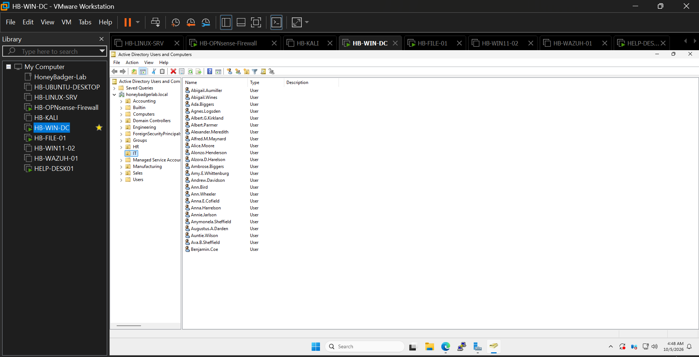

HANDS-ON ENTERPRISE HOMELAB
HoneyBadger Lab
IT Infrastructure • Cybersecurity • Systems Administration
A multi-system enterprise-style virtual environment built to develop practical experience in desktop support, Windows Server administration, Active Directory, networking, cybersecurity monitoring, Linux, IT service management, and troubleshooting.
ABOUT THE LAB
Enterprise IT Experience Built at Home
HoneyBadger Lab recreates common enterprise technologies and support workflows in a controlled virtual environment. The lab is used to practice deployment, administration, troubleshooting, monitoring, security, and documentation.
INFRASTRUCTURE
HoneyBadger Lab Architecture
The environment combines Windows Server, Windows clients, Linux, network security, SIEM, ITSM, file services, endpoint administration, and security testing into one integrated lab.

Identity
Active Directory Domain Services, DNS, organizational units, users, groups, authentication, and Group Policy.
Networking
OPNsense firewall, LAN routing, firewall policies, network segmentation, DNS, DHCP, and remote access.
Security
Wazuh SIEM, endpoint agents, log collection, vulnerability monitoring, Kali Linux, and security testing.
IT Operations
GLPI ticketing, asset management, Windows endpoints, file services, user support, and troubleshooting.
VIRTUALIZATION
Live VMware Environment
The infrastructure is deployed in VMware Workstation as multiple interconnected virtual machines rather than simulated only through documentation.

Multi-System Enterprise Lab
VMware Workstation hosts Windows Server, Windows 11, Ubuntu/Linux, Kali Linux, OPNsense, Wazuh, file services, and the GLPI help desk environment.
PROJECTS
Hands-On Lab Projects
Each project focuses on practical skills used in desktop support, systems administration, networking, and cybersecurity roles.
Active Directory
Windows Server domain deployment, organizational units, users, groups, authentication, DNS, and domain administration.
02Group Policy
Centralized Windows configuration and security policies using Active Directory Group Policy.
03Enterprise File Server
Department shares, NTFS permissions, mapped network drives, access control, and centralized file storage.
04OPNsense Firewall
Virtual firewall deployment, routing, network security policies, NAT, and traffic management.
05Wazuh SIEM
Centralized security monitoring, endpoint agents, event collection, threat detection, and security analysis.
06GLPI Help Desk
IT service management environment integrating ticketing, users, technicians, incidents, assets, and Active Directory.
07Linux Server
Linux server deployment, SSH administration, networking, services, permissions, and command-line management.
08Kali Security
Security testing environment for network discovery, scanning, vulnerability assessment, and defensive security practice.
09Remote Access
Secure remote administration of the lab using RDP, VPN-style connectivity, and remote management tools.
IDENTITY MANAGEMENT
Active Directory Environment
HoneyBadger Lab uses a Windows Server domain to simulate centralized enterprise identity and endpoint management.

Users & Organizational Units
The domain is organized into departmental organizational units to simulate an enterprise directory structure.
- Department-based organizational units
- Domain user accounts
- Security groups
- Centralized authentication
- Group Policy administration
- Windows domain clients
IT SERVICE MANAGEMENT
GLPI Help Desk
The lab includes a working IT service management platform for practicing real help-desk workflows from ticket submission through technical resolution.
Ticket Management Workflow
GLPI provides a realistic service desk environment where users can report incidents and technicians can categorize, prioritize, assign, document, and resolve support requests.
- Incident creation
- Ticket categorization
- Urgency and impact
- Technician assignment
- Active Directory users
- Resolution documentation

TECHNOLOGIES
Skills Demonstrated
Systems
Windows Server 2022
Windows 11
Ubuntu Linux
Kali Linux
Infrastructure
Active Directory
DNS & DHCP
Group Policy
File Services
Security
Wazuh SIEM
OPNsense
Endpoint Monitoring
Security Testing
IT Support
GLPI ITSM
Incident Management
Troubleshooting
Remote Support